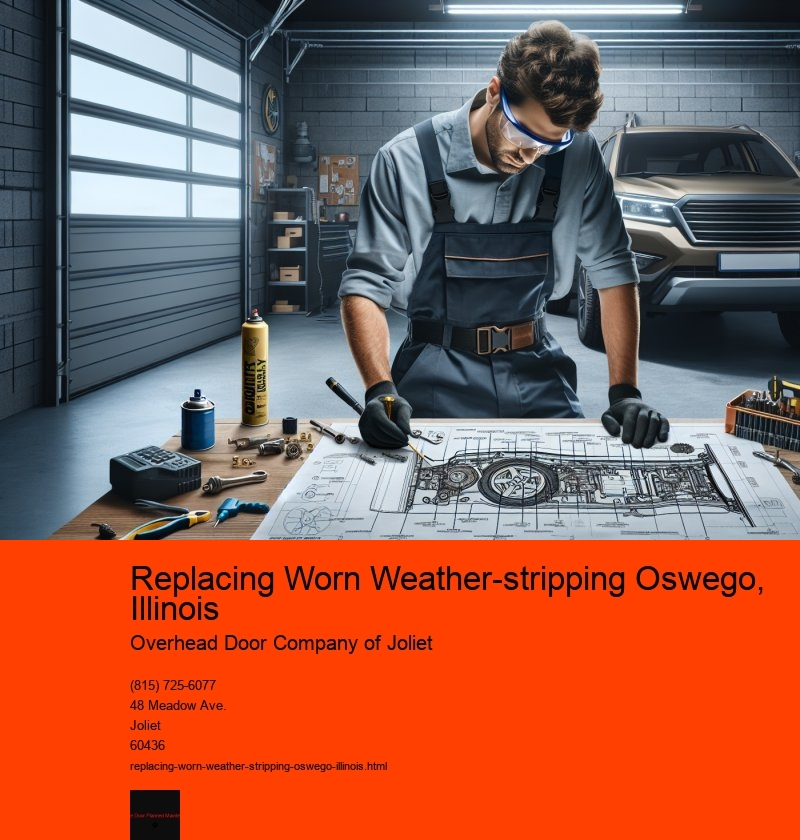

Replacing worn weather-stripping in Oswego, Illinois, is a crucial task for homeowners who wish to maintain energy efficiency and comfort within their homes. As the seasons change, ensuring that your home is well-insulated becomes essential, particularly in a region like Oswego, where the weather can vary significantly from hot summers to freezing winters. Weather-stripping serves as a barrier to prevent air leaks around doors and windows, effectively reducing energy costs and enhancing indoor comfort.
In Oswego, the climate demands that homeowners pay close attention to the integrity of their weather-stripping. The harsh winters can lead to significant heat loss if doors and windows are not properly sealed. This not only results in higher heating bills but also puts extra strain on heating systems as they work harder to maintain a consistent indoor temperature. Similarly, during the sweltering summer months, inadequate weather-stripping can lead to cool air escaping, causing air conditioners to run longer and increasing electricity costs.
The process of replacing worn weather-stripping is straightforward but requires careful attention to detail to ensure maximum effectiveness. The first step is to inspect all doors and windows to identify areas where the existing weather-stripping is damaged or missing. Common signs of wear include cracked, brittle, or flattened strips, as well as any visible gaps that allow light or air to pass through.
Once the problem areas are identified, the next step is to choose the appropriate type of weather-stripping for each specific location. There are several types available, including adhesive-backed foam tape, V-strip, door sweeps, and felt. Each type has its own advantages and is suited for different applications. For instance, adhesive-backed foam tape is easy to install and works well for sealing gaps in windows, while door sweeps are ideal for the bottom of exterior doors.
After selecting the right materials, homeowners should carefully remove any old weather-stripping, taking care not to damage the surrounding surfaces. Cleaning the area where the new weather-stripping will be applied is crucial to ensure a good seal. The new weather-stripping should be cut to the appropriate length and installed according to the manufacturers instructions, ensuring a snug fit that effectively blocks air flow.
The benefits of replacing worn weather-stripping extend beyond energy savings. A well-sealed home can also improve indoor air quality by reducing the infiltration of dust, pollen, and other outdoor pollutants. Additionally, it can enhance the overall comfort of the home by minimizing drafts and maintaining a stable indoor temperature.
In conclusion, replacing worn weather-stripping in Oswego, Illinois, is a simple yet impactful home maintenance task that can lead to significant energy savings and improved comfort. By taking the time to inspect, select, and install the appropriate weather-stripping materials, homeowners can protect their homes from the elements and enjoy a more efficient living environment. As energy costs continue to rise, investing in effective weather-stripping is a cost-effective strategy that pays dividends throughout the year.
Checking Side and Top Seals Oswego, Illinois
